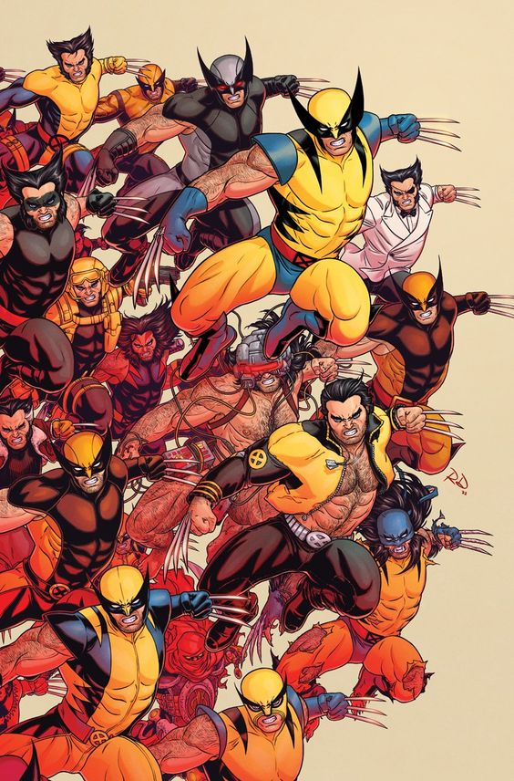

@meuportal
Esporte

Fim de tarde sobre os patins
O hóquei inline é um dos meus hobbies favoritos. Além do exercício, ele ensina equilíbrio, velocidade e trabalho em equipe.
♡ Curtir | 💬 Comentar
Programação, hobbies e um pouco sobre mim
Registros das coisas que gosto de fazer quando não estou estudando ou programando.
@meuportal
Esporte
O hóquei inline é um dos meus hobbies favoritos. Além do exercício, ele ensina equilíbrio, velocidade e trabalho em equipe.
♡ Curtir | 💬 Comentar
@meuportal
Música
Algumas músicas ajudam a criar o clima certo para estudar, programar e desenvolver novos projetos.
♡ Curtir | 💬 Comentar
@meuportal
Filmes e séries

Para quem gosta de sangue e uma história para dar risada, recomendo que assista Logan.
♡ Curtir | 💬 Comentar